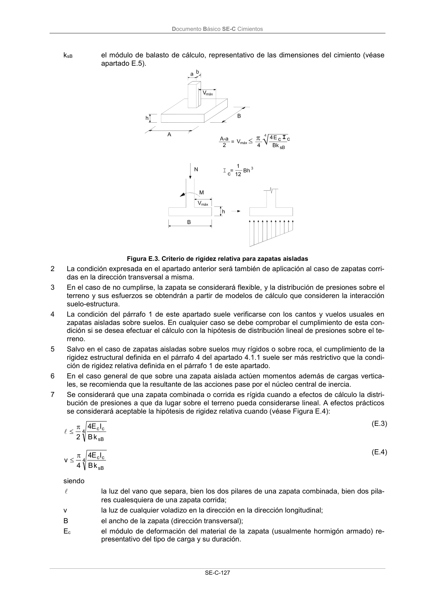

DB-SE-C Cimientos · edición 2019-12-20 · capa oficial
Documento DB-SE-C-oficial · SHA-256 del PDF a71133f4b0dca253e45ea3071c70f2a512354bcc5cd841bf89b1a502f567ac5e
Página física 132 de 165.
Copia fiel del PDF fuente · Fuente oficial
Ficha de la disposición en la fuente oficial
Formato: Texto de la página (Markdown)
Documento Básico SE-C Cimientos SE-C-127 ksB el módulo de balasto de cálculo, representativo de las dimensiones del cimiento (véase apartado E.5). Figura E.3. Criterio de rigidez relativa para zapatas aisladas 2 La condición expresada en el apartado anterior será también de aplicación al caso de zapatas corri- das en la dirección transversal a misma. 3 En el caso de no cumplirse, la zapata se considerará flexible, y la distribución de presiones sobre el terreno y sus esfuerzos se obtendrán a partir de modelos de cálculo que consideren la interacción suelo-estructura. 4 La condición del párrafo 1 de este apartado suele verificarse con los cantos y vuelos usuales en zapatas aisladas sobre suelos. En cualquier caso se debe comprobar el cumplimiento de esta con- dición si se desea efectuar el cálculo con la hipótesis de distribución lineal de presiones sobre el te- rreno. 5 Salvo en el caso de zapatas aisladas sobre suelos muy rígidos o sobre roca, el cumplimiento de la rigidez estructural definida en el párrafo 4 del apartado 4.1.1 suele ser más restrictivo que la condi- ción de rigidez relativa definida en el párrafo 1 de este apartado. 6 En el caso general de que sobre una zapata aislada actúen momentos además de cargas vertica- les, se recomienda que la resultante de las acciones pase por el núcleo central de inercia. 7 Se considerará que una zapata combinada o corrida es rígida cuando a efectos de cálculo la distri- bución de presiones a que da lugar sobre el terreno pueda considerarse lineal. A efectos prácticos se considerará aceptable la hipótesis de rigidez relativa cuando (véase Figura E.4): 4 sB c c k B I E 4 2 l (E.3) 4 sB c c k B I E 4 4 v (E.4) siendo l la luz del vano que separa, bien los dos pilares de una zapata combinada, bien dos pila- res cualesquiera de una zapata corrida; v la luz de cualquier voladizo en la dirección en la dirección longitudinal; B el ancho de la zapata (dirección transversal); Ec el módulo de deformación del material de la zapata (usualmente hormigón armado) re- presentativo del tipo de carga y su duración.
